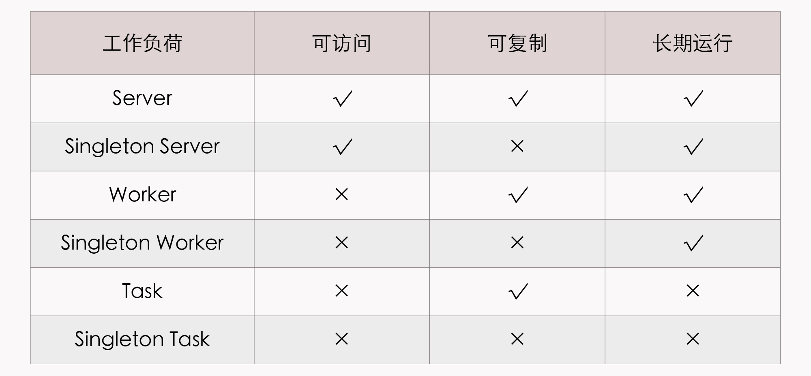
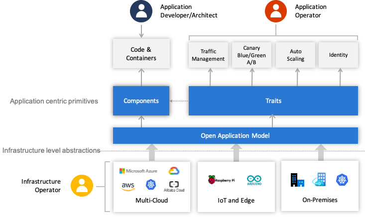

- 00 _导读 _ 什么是“The Fenix Project”？.md
- 00 开篇词 _ 如何构建一个可靠的分布式系统？.md
- 01 _ 原始分布式时代：Unix设计哲学下的服务探索.md
- 02 _ 单体系统时代：应用最广泛的架构风格.md
- 03 _ SOA时代：成功理论与失败实践.md
- 04 _ 微服务时代：SOA的革命者.md
- 05 _ 后微服务时代：跨越软件与硬件之间的界限.md
- 06 _ 无服务时代：“不分布式”云端系统的起点.md
- 07 _ 远程服务调用（上）：从本地方法到远程方法的桥梁.md
- 08 _ 远程服务调用（下）：如何选择适合自己的RPC框架？.md
- 09 _ RESTful服务（上）：从面向过程编程到面向资源编程.md
- 10 _ RESTful服务（下）：如何评价服务是否RESTful？.md
- 11 _ 本地事务如何实现原子性和持久性？.md
- 12 _ 本地事务如何实现隔离性？.md
- 13 _ 全局事务和共享事务是如何实现的？.md
- 14 _ 分布式事务之可靠消息队列.md
- 15 _ 分布式事务之TCC与SAGA.md
- 16 _ 域名解析系统，优化HTTP性能的第一步.md
- 17 _ 客户端缓存是如何帮助服务器分担流量的？.md
- 18 _ 传输链路，优化HTTP传输速度的小技巧.md
- 19 _ 如何利用内容分发网络来提高网络性能？.md
- 20 _ 常见的四层负载均衡的工作模式是怎样的？.md
- 21 _ 服务端缓存的三种属性.md
- 22 _ 分布式缓存如何与本地缓存配合，提高系统性能？.md
- 23 _ 认证：系统如何正确分辨操作用户的真实身份？.md
- 24 _ 授权（上）：系统如何确保授权的过程可靠？.md
- 25 _ 授权（下）：系统如何确保授权的结果可控？.md
- 26 _ 凭证：系统如何保证与用户之间的承诺是准确完整且不可抵赖的？.md
- 27 _ 保密：系统如何保证敏感数据无法被内外部人员窃取滥用？.md
- 28 _ 传输（上）：传输安全的基础，摘要、加密与签名.md
- 29 _ 传输（下）：数字证书与传输安全层.md
- 30 _ 验证：系统如何确保提交给服务的数据是安全的？.md
- 31 _ 分布式共识（上）：想用好分布式框架，先学会Paxos算法吧.md
- 32 _ 分布式共识（下）：Multi Paxos、Raft与Gossip，分布式领域的基石.md
- 33 _ 服务发现如何做到持续维护服务地址在动态运维中的时效性？.md
- 34 _ 路由凭什么作为微服务网关的基础职能？.md
- 35 _ 如何在客户端实现服务的负载均衡？.md
- 36 _ 面对程序故障，我们该做些什么？.md
- 37 _ 要实现某种容错策略，我们该怎么做？.md
- 38 _ 限流的目标与模式.md
- 39 _ 如何构建零信任网络安全？.md
- 40 _ 如何实现零信任网络下安全的服务访问？.md
- 41 _ 分布式架构中的可观测到底说的是什么？.md
- 42 _ 分析日志真的没那么简单.md
- 43 _ 一个完整的分布式追踪系统是什么样子的？.md
- 44 _ 聚合度量能给我们解决什么问题？.md
- 45 _ 模块导学：从微服务到云原生.md
- 46 _ 容器的崛起（上）：文件、访问、资源的隔离.md
- 47 _ 容器的崛起（下）：系统、应用、集群的封装.md
- 48 _ 以容器构建系统（上）：隔离与协作.md
- 49 _ 以容器构建系统（下）：韧性与弹性.md
- 50 _ 应用为中心的封装（上）：Kustomize与Helm.md
- 51 _ 应用为中心的封装（下）：Operator与OAM.md
- 52 _ Linux网络虚拟化（上）：信息是如何通过网络传输被另一个程序接收到的？.md
- 53 _ Linux网络虚拟化（下）：Docker所提供的容器通讯方案有哪些？.md
- 54 _ 容器网络与生态：与CNM竞争过后的CNI下的网络插件生态.md
- 55 _ 谈谈Kubernetes的存储设计理念.md
- 56 _ Kubernetes存储扩展架构：一个真实的存储系统如何接入或移除新存储设备？.md
- 57 _ Kubernetes存储生态系统：几种有代表性的CSI存储插件的实现.md
- 58 _ Kubernetes的资源模型与调度器设计.md
- 59 _ 透明通讯的涅槃（上）：通讯的成本.md
- 60 _ 透明通讯的涅槃（下）：控制平面与数据平面.md
- 61 _ 服务网格与生态：聊聊服务网格的两项标准规范.md
- 63 _ 基于Spring Boot的单体架构.md
- 64 _ 基于Spring Cloud的微服务架构.md
- 65 _ 基于Kubernetes的微服务架构.md
- 66 _ 基于Istio的服务网格架构.md
- 67 _ 基于云计算的无服务架构.md
- 春节特别放送（上）_ 有的放矢，事半功倍.md
- 春节特别放送（下）_ 积累沉淀，知行合一.md
- 用户故事 _ 詹应达：持续成长，不惧未来.md
- 结束语 _ 程序员之路.md
- 结课测试 _ 一套习题，测出你的掌握程度.md
51 _ 应用为中心的封装（下）：Operator与OAM
你好，我是周志明。上节课我们了解了无状态应用的两种主流封装方式，分别是Kustomize和Helm。那么今天这节课，我们继续来学习有状态应用的两种封装方法，包括Operator和开放应用模型。
Operator
与Kustomize和Helm不同的是，Operator不应当被称作是一种工具或者系统，它应该算是一种封装、部署和管理Kubernetes应用的方法，尤其是针对最复杂的有状态应用去封装运维能力的解决方案，最早是由CoreOS公司（于2018年被RedHat收购）的华人程序员邓洪超提出的。
简单来说，Operator是通过Kubernetes 1.7开始支持的自定义资源（Custom Resource Definitions，CRD，此前曾经以TPR，即Third Party Resource的形式提供过类似的能力），把应用封装为另一种更高层次的资源，再把Kubernetes的控制器模式从面向内置资源，扩展到了面向所有自定义资源，以此来完成对复杂应用的管理。
具体怎么理解呢？我们来看一下RedHat官方对Operator设计理念的阐述：
Operator设计理念- Operator是使用自定义资源（CR，本人注：CR即Custom Resource，是CRD的实例）管理应用及其组件的自定义Kubernetes控制器。高级配置和设置由用户在CR中提供。Kubernetes Operator基于嵌入在Operator逻辑中的最佳实践，将高级指令转换为低级操作。Kubernetes Operator监视CR类型并采取特定于应用的操作，确保当前状态与该资源的理想状态相符。- —— 什么是 Kubernetes Operator，RedHat
这段文字是直接由RedHat官方撰写并翻译成中文的，准确严谨，但比较拗口，对于没接触过Operator的人来说并不友好，比如，你可能就会问，什么叫做“高级指令”？什么叫做“低级操作”？它们之间具体如何转换呢？等等。
其实要理解这些问题，你必须先弄清楚有状态和无状态应用的含义及影响，然后再来理解Operator所做的工作。在上节课，我给你补充了一个“额外知识”，已经介绍过了二者之间的区别，现在我们再来看看：
有状态应用（Stateful Application）与无状态应用（Stateless Application）说的是应用程序是否要自己持有其运行所需的数据，如果程序每次运行都跟首次运行一样，不依赖之前任何操作所遗留下来的痕迹，那它就是无状态的；反之，如果程序推倒重来之后，用户能察觉到该应用已经发生变化，那它就是有状态的。
无状态应用在分布式系统中具有非常巨大的价值，我们都知道分布式中的CAP不兼容原理，如果无状态，那就不必考虑状态一致性，没有了C，那A和P就可以兼得。换句话说，只要资源足够，无状态应用天生就是高可用的。但不幸的是，现在的分布式系统中，多数关键的基础服务都是有状态的，比如缓存、数据库、对象存储、消息队列，等等，只有Web服务器这类服务属于无状态。
站在Kubernetes的角度看，是否有状态的本质差异在于，有状态应用会对某些外部资源有绑定性的直接依赖，比如说，Elasticsearch在建立实例时，必须依赖特定的存储位置，只有重启后仍然指向同一个数据文件的实例，才能被认为是相同的实例。另外，有状态应用的多个应用实例之间，往往有着特定的拓扑关系与顺序关系，比如etcd的节点间选主和投票，节点们都需要得知彼此的存在，明确每一个节点的网络地址和网络拓扑关系。
为了管理好那些与应用实例密切相关的状态信息，Kubernetes从1.9版本开始正式发布了StatefulSet及对应的StatefulSetController。与普通ReplicaSet中的Pod相比，由StatefulSet管理的Pod具备几项额外特性。
- Pod会按顺序创建和按顺序销毁：StatefulSet中的各个Pod会按顺序地创建出来，而且，再创建后面的Pod之前，必须要保证前面的Pod已经转入就绪状态。如果要销毁StatefulSet中的Pod，就会按照与创建顺序的逆序来执行。
- Pod具有稳定的网络名称：Kubernetes中的Pod都具有唯一的名称，在普通的副本集中，这是靠随机字符产生的，而在StatefulSet中管理的Pod，会以带有顺序的编号作为名称，而且能够在重启后依然保持不变。
- Pod具有稳定的持久存储：StatefulSet中的每个Pod都可以拥有自己独立的PersistentVolumeClaim资源。即使Pod被重新调度到其他节点上，它所拥有的持久磁盘也依然会被挂载到该Pod，这点会在“容器持久化”这个小章节中进一步介绍。
看到这些特性以后，你可能还会说，我还是不太理解StatefulSet的设计意图呀。没关系，我来举个例子，你一看就理解了。
如果把ReplicaSet中的Pod比喻为养殖场中的“肉猪”，那StatefulSet就是被当作宠物圈养的“荷兰猪”，不同的肉猪在食用功能上并没有什么区别，但每只宠物猪都是独一无二的，有专属于自己的名字、习性与记忆。事实上，早期的StatefulSet就曾经使用过PetSet这个名字。
StatefulSet出现以后，Kubernetes就能满足Pod重新创建后，仍然保留上一次运行状态的需求了。不过，有状态应用的维护并不仅限于此。比如说，对于一套Elasticsearch集群来说，通过StatefulSet，最多只能做到创建集群、删除集群、扩容缩容等最基本的操作，并不支持常见的运维操作，比如备份和恢复数据、创建和删除索引、调整平衡策略，等等。
我再举个实际例子，来说明一下，Operator是如何解决那些StatefulSet覆盖不到的有状态服务管理需求的。
假设我们要部署一套Elasticsearch集群，通常要在StatefulSet中定义相当多的细节，比如服务的端口、Elasticsearch的配置、更新策略、内存大小、虚拟机参数、环境变量、数据文件位置，等等。
这里我直接把满足这个需求的YAML全部贴出来，让你对咱们前面反复提到的Kubernetes的复杂性有更加直观的理解。
apiVersion: v1
kind: Service
metadata:
name: elasticsearch-cluster
spec:
clusterIP: None
selector:
app: es-cluster
ports:
- name: transport
port: 9300
---
apiVersion: v1
kind: Service
metadata:
name: elasticsearch-loadbalancer
spec:
selector:
app: es-cluster
ports:
- name: http
port: 80
targetPort: 9200
type: LoadBalancer
---
apiVersion: v1
kind: ConfigMap
metadata:
name: es-config
data:
elasticsearch.yml: |
cluster.name: my-elastic-cluster
network.host: "0.0.0.0"
bootstrap.memory_lock: false
discovery.zen.ping.unicast.hosts: elasticsearch-cluster
discovery.zen.minimum_master_nodes: 1
xpack.security.enabled: false
xpack.monitoring.enabled: false
ES_JAVA_OPTS: -Xms512m -Xmx512m
---
apiVersion: apps/v1beta1
kind: StatefulSet
metadata:
name: esnode
spec:
serviceName: elasticsearch
replicas: 3
updateStrategy:
type: RollingUpdate
template:
metadata:
labels:
app: es-cluster
spec:
securityContext:
fsGroup: 1000
initContainers:
- name: init-sysctl
image: busybox
imagePullPolicy: IfNotPresent
securityContext:
privileged: true
command: ["sysctl", "-w", "vm.max_map_count=262144"]
containers:
- name: elasticsearch
resources:
requests:
memory: 1Gi
securityContext:
privileged: true
runAsUser: 1000
capabilities:
add:
- IPC_LOCK
- SYS_RESOURCE
image: docker.elastic.co/elasticsearch/elasticsearch:7.9.1
env:
- name: ES_JAVA_OPTS
valueFrom:
configMapKeyRef:
name: es-config
key: ES_JAVA_OPTS
readinessProbe:
httpGet:
scheme: HTTP
path: /_cluster/health?local=true
port: 9200
initialDelaySeconds: 5
ports:
- containerPort: 9200
name: es-http
- containerPort: 9300
name: es-transport
volumeMounts:
- name: es-data
mountPath: /usr/share/elasticsearch/data
- name: elasticsearch-config
mountPath: /usr/share/elasticsearch/config/elasticsearch.yml
subPath: elasticsearch.yml
volumes:
- name: elasticsearch-config
configMap:
name: es-config
items:
- key: elasticsearch.yml
path: elasticsearch.yml
volumeClaimTemplates:
- metadata:
name: es-data
spec:
accessModes: [ "ReadWriteOnce" ]
resources:
requests:
storage: 5Gi
可以看到，这里面的细节配置非常多。其实，之所以会这样，根本原因在于Kubernetes完全不知道Elasticsearch是个什么东西。所有Kubernetes不知道的信息、不能启发式推断出来的信息，都必须由用户在资源的元数据定义中明确列出，必须一步一步手把手地“教会”Kubernetes部署Elasticsearch，这种形式就属于咱们刚刚提到的“低级操作”。
如果我们使用Elastic.co官方提供的Operator，那就会简单多了。Elasticsearch Operator提供了一种kind: Elasticsearch的自定义资源，在它的帮助下，只需要十行代码，将用户的意图是“部署三个版本为7.9.1的ES集群节点”说清楚，就能实现跟前面StatefulSet那一大堆配置相同甚至是更强大的效果，如下面代码所示：
apiVersion: elasticsearch.k8s.elastic.co/v1
kind: Elasticsearch
metadata:
name: elasticsearch-cluster
spec:
version: 7.9.1
nodeSets:
- name: default
count: 3
config:
node.master: true
node.data: true
node.ingest: true
node.store.allow_mmap: false
有了Elasticsearch Operator的自定义资源，就相当于Kubernetes已经学会怎样操作Elasticsearch了。知道了所有它相关的参数含义与默认值，就不需要用户再手把手地教了，这种就是所谓的“高级指令”。
Operator将简洁的高级指令转化为Kubernetes中具体操作的方法，跟Helm或Kustomize的思路并不一样：
- Helm和Kustomize最终仍然是依靠Kubernetes的内置资源，来跟Kubernetes打交道的；
- Operator则是要求开发者自己实现一个专门针对该自定义资源的控制器，在控制器中维护自定义资源的期望状态。
通过程序编码来扩展Kubernetes，比只通过内置资源来与Kubernetes打交道要灵活得多。比如，在需要更新集群中某个Pod对象的时候，由Operator开发者自己编码实现的控制器，完全可以在原地对Pod进行重启，不需要像Deployment那样，必须先删除旧Pod，然后再创建新Pod。
使用CRD定义高层次资源、使用配套的控制器来维护期望状态，带来的好处不仅仅是“高级指令”的便捷，更重要的是，可以在遵循Kubernetes的一贯基于资源与控制器的设计原则的同时，又不必受制于Kubernetes内置资源的表达能力。只要Operator的开发者愿意编写代码，前面提到的那些StatfulSet不能支持的能力，如备份恢复数据、创建删除索引、调整平衡策略等操作，都完全可以实现出来。
把运维的操作封装在程序代码上，从表面上看，最大的受益者是运维人员，开发人员要为此付出更多劳动。然而，Operator并没有被开发者抵制，相反，因为用代码来描述复杂状态往往反而比配置文件更加容易，开发与运维之间的协作成本降低了，还受到了开发者的一致好评。
因为Operator的各种优势，它变成了近两、三年容器封装应用的一股新潮流，现在很多复杂分布式系统都有了官方或者第三方提供的Operator（这里收集了一部分）。RedHat公司也持续在Operator上面进行了大量投入，推出了简化开发人员编写Operator的Operator Framework/SDK。
目前看来，应对有状态应用的封装运维，Operator也许是最有可行性的方案，但这依然不是一项轻松的工作。以etcd的Operator为例，etcd本身不算什么特别复杂的应用，Operator实现的功能看起来也相当基础，主要有创建集群、删除集群、扩容缩容、故障转移、滚动更新、备份恢复等功能，但是代码就已经超过一万行了。
现在，开发Operator的确还是有着相对较高的门槛，通常由专业的平台开发者而非业务开发或者运维人员去完成。但是，Operator非常符合技术潮流，顺应了软件业界所提倡的DevOps一体化理念，等Operator的支持和生态进一步成熟之后，开发和运维都能从中受益，未来应该能成长为一种应用封装的主流形式。
OAM
我要给你介绍的最后一种应用封装的方案，是阿里云和微软在2019年10月上海QCon大会上联合发布的开放应用模型（Open Application Model，OAM），它不仅是中国云计算企业参与制定，甚至是主导发起的国际技术规范，也是业界首个云原生应用标准定义与架构模型。
OAM思想的核心是将开发人员、运维人员与平台人员的关注点分离，开发人员关注业务逻辑的实现，运维人员关注程序的平稳运行，平台人员关注基础设施的能力与稳定性。毕竟，长期让几个角色厮混在同一个All-in-One资源文件里，并不能擦出什么火花，反而会将配置工作弄得越来越复杂，把“YAML Engineer”弄成容器界的嘲讽梗。
OAM对云原生应用的定义是：“由一组相互关联但又离散独立的组件构成，这些组件实例化在合适的运行时上，由配置来控制行为并共同协作提供统一的功能”。你可能看不懂是啥意思，没有关系，为了方便跟后面的概念对应，我先把这句话拆解一下：
OAM定义的应用- 一个
Application由一组Components构成，每个Component的运行状态由Workload描述，每个Component可以施加Traits来获取额外的运维能力，同时，我们可以使用Application Scopes将Components划分到一或者多个应用边界中，便于统一做配置、限制、管理。把Components、Traits和Scopes组合在一起实例化部署，形成具体的Application Configuration，以便解决应用的多实例部署与升级。
然后，我来具体解释一下上面列出来的核心概念，来帮助你理解OAM对应用的定义。在这句话里面，每一个用英文标注出来的技术名词，都是OAM在Kubernetes的基础上扩展而来的概念，每一个名词都有相对应的自定义资源。换句话说，它们并不是单纯的抽象概念，而是可以被实际使用的自定义资源。
我们来看一下这些概念的具体含义。
- Components（服务组件）：自SOA时代以来，由Component构成应用的思想就屡见不鲜，然而，OAM的Component不仅仅是特指构成应用“整体”的一个“部分”，它还有一个重要的职责，那就是抽象出那些应该由开发人员去关注的元素。比如应用的名字、自述、容器镜像、运行所需的参数，等等。
- Workload（工作负荷）：Workload决定了应用的运行模式，每个Component都要设定自己的Workload类型，OAM按照“是否可访问、是否可复制、是否长期运行”预定义了六种Workload类型，如下表所示。如果有必要，使用者还可以通过CRD与Operator去扩展。

- Traits（运维特征）：开发活动有大量复用功能的技巧，但运维活动却很缺少这样的技巧，平时能为运维写个Shell脚本或简单工具，就已经算是个高级的运维人员了。Traits就可以用来封装模块化后的运维能力，它可以针对运维中的可重复操作预先设定好一些具体的Traits，比如日志收集Trait、负载均衡Trait、水平扩缩容Trait，等等。这些预定义的Traits定义里，会注明它们可以作用于哪种类型的工作负荷，还包括能填哪些参数、哪些必填选填项、参数的作用描述是什么，等等。
- Application Scopes（应用边界）：多个Component共同组成一个Scope，你可以根据Component的特性或作用域来划分Scope。比如，具有相同网络策略的Component放在同一个Scope中，具有相同健康度量策略的Component放到另一个Scope中。同时，一个Component也可能属于多个Scope，比如，一个Component完全可能既需要配置网络策略，也需要配置健康度量策略。
- Application Configuration（应用配置）：将Component（必须）、Trait（必须）、Scope（非必须）组合到一起进行实例化，就形成了一个完整的应用配置。
OAM使用咱们刚刚所说的这些自定义资源，对原先All-in-One的复杂配置做了一定层次的解耦：
- 开发人员负责管理Component；
- 运维人员将Component组合并绑定Trait，把它变成Application Configuration；
- 平台人员或基础设施提供方负责提供OAM的解释能力，将这些自定义资源映射到实际的基础设施。
这样，不同角色分工协作，就整体简化了单个角色关注的内容，让不同角色可以更聚焦、更专业地做好本角色的工作，整个过程如下图所示：

OAM角色关系图（图片来自OAM规范GitHub）
事实上，OAM未来能否成功，很大程度上取决于云计算厂商的支持力度，因为OAM的自定义资源一般是由云计算基础设施负责解释和驱动的，比如阿里云的EDAS就已内置了OAM的支持。
如果你希望能够应用在私有Kubernetes环境中，目前，OAM的主要参考实现是Rudr（已声明废弃）和Crossplane。Crossplane是一个仅发起一年多的CNCF沙箱项目，主要参与者包括阿里云、微软、Google、RedHat等工程师。Crossplane提供了OAM中全部的自定义资源和控制器，安装以后，就可以用OAM定义的资源来描述应用了。
小结
今天，容器圈的发展是一日千里，各种新规范、新技术层出不穷。在这两节课里，我特意挑选了非常流行，而且有代表性的四种，分别是“无状态应用”的典型代表Kustomize和Helm，和“有状态应用”的典型代表Operator和OAM。
其他我没有提到的应用封装技术，还有CNAB、Armada、Pulumi，等等。这些封装技术会有一定的重叠之处，但并非都是重复的轮子，在实际应用的时候，往往会联合其中多个工具一起使用。而至于怎么封装应用才是最佳的实践，目前也还没有定论，但可以肯定的是，以应用为中心的理念已经成为了明确的共识。
一课一思
在“虚拟化容器”这个小章节中，我安排了五节课来介绍虚拟化容器的原理和应用，不知道经过这几节课的学习后，你对容器是否有更新的认识？可以在留言区说说你对容器现状和未来的看法，我们一起交流讨论。
如果你觉得有收获，欢迎把今天的内容分享给更多的朋友。感谢你的阅读，我们下一讲再见。
© 2019 - 2023 Liangliang Lee. Powered by gin and hexo-theme-book.